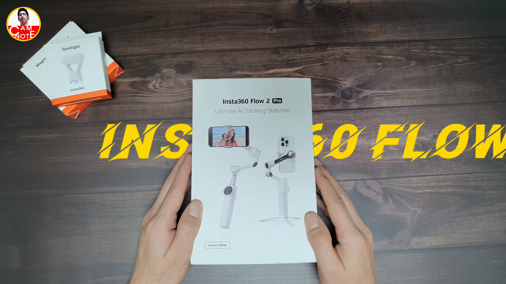
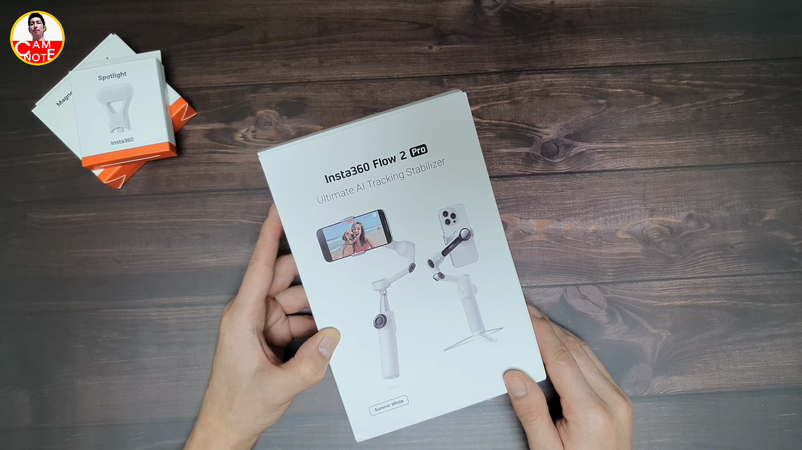
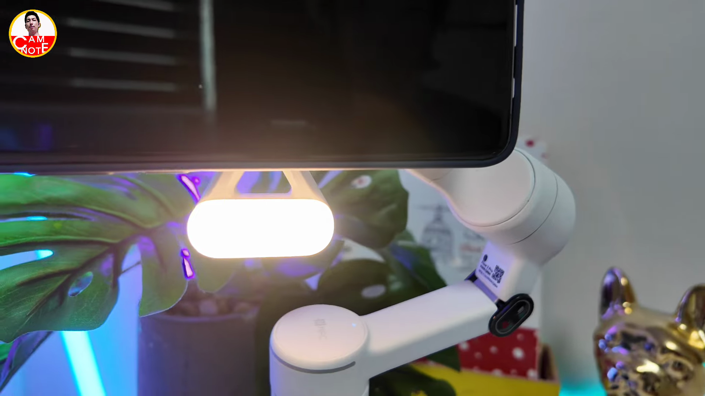
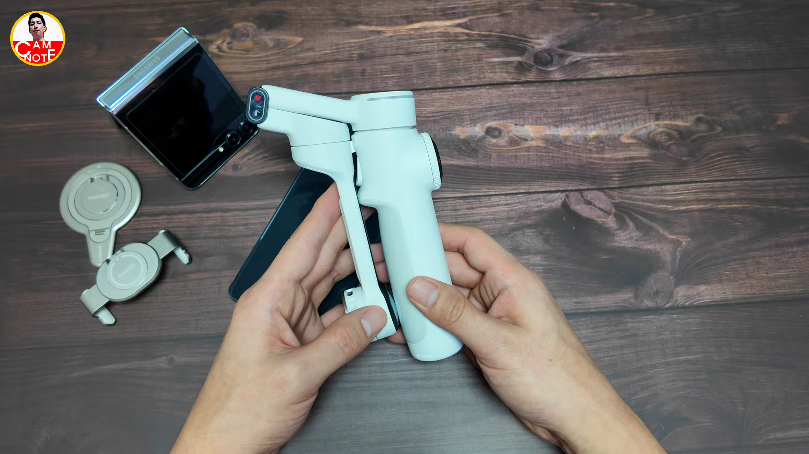
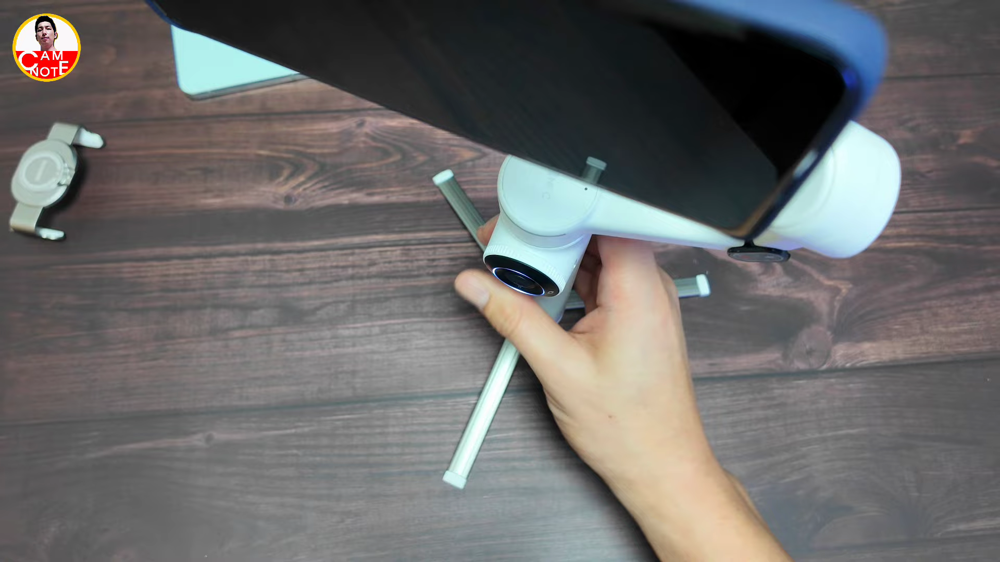

이번 블로그 포스트에서는 인스타 360의 최신 스마트폰 짐벌, 인스타 360 플로 2 프로에 대해 자세히 알아보겠습니다. 이 제품은 AI 기능이 강화되었으며, 사용성이 향상된 여러 특징을 가지고 있습니다. 특히, 안드로이드와 아이폰 모두에서 사용할 수 있는 점이 인상적입니다. 지금부터 이 멋진 짐벌이 어떤 장점을 가지고 있는지 살펴보겠습니다. 
제품 소개 및 출시 배경
- 인스타 360 플로 2 프로의 출시
- 플로 1세대 이후의 발전
- AI 기능 강화
인스타 360 플로 2 프로는 이전 세대인 플로 1의 성능을 개선한 모델로, AI 기능이 크게 강화되었습니다.

패키지 구성과 가격
- 기본 구성품 소개
- 세 가지 번들 옵션
- 가격 비교
인스타 360 플로 2 프로는 기본 구성품에 스티커, 클램프, 케이블을 포함하고 있으며, 가격은 약 199,000원부터 시작됩니다.

사용자 경험: 그립과 안정성
- 미니 삼각대의 품질 향상
- 그립감 개선
- 사용자 편의성 증가
이번 모델에서는 그립이 길어지고 미끄럼 방지 패드가 추가되어 그립감이 크게 개선되었습니다.

조작부 및 기능
- 전원 켜기 간편화
- 자동 정렬 기능
- NFC 기능 사용
플로 2 프로의 조작부는 직관적으로 설계되어 있으며, 전원을 쉽게 켤 수 있고 NFC 기능으로 스마트폰과 간편하게 연결할 수 있습니다.

틸트 및 팬 기능 소개
- 틸트 각도 조절
- 팬 모드의 자유로운 회전
- 인스타 360의 틸트 각도 해결
플로 2 프로는 틸트 각도를 자유롭게 조절할 수 있어, 다양한 앵글의 촬영이 용이합니다.
종합 평가 및 향후 리뷰 예고
- 기본적인 기능과 설정 사용법
- 다양한 촬영 옵션
- 성능에 대한 기대
다음 리뷰에서는 플로 2 프로의 기본적인 기능과 설정 사용법을 정리할 예정입니다.
Tags: #인스타360 #플로2프로 #스마트폰짐벌 #AI기능 #리뷰 #촬영장비 #영상촬영 #그립감 #틸트각도